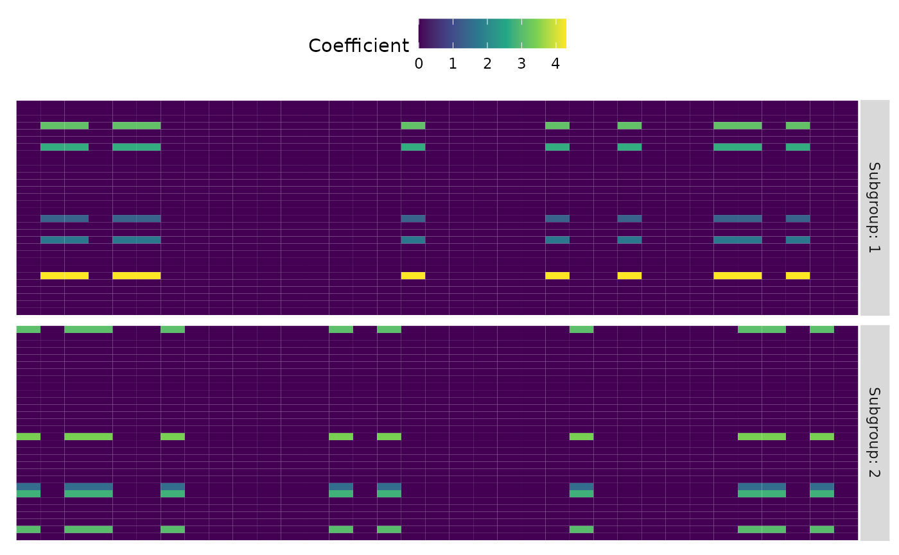

Setup
Mixed, low-rank, and sparse multivariate regression (mixedLSR) provides tools for performing mixture regression when the coefficient matrix is low-rank and sparse. mixedLSR allows subgroup identification by alternating optimization with simulated annealing to encourage global optimum convergence. This method is data-adaptive, automatically performing parameter selection to identify low-rank substructures in the coefficient matrix.
Simulate Data
To demonstrate mixedLSR, we simulate a heterogeneous population where the coefficient matrix is low-rank and sparse and the number of coefficients to estimate is much larger than the sample size.
sim <- simulate_lsr(N = 100, k = 2, p = 30, m = 35)Compute Model
Then, we compute the model. We limit the number of iterations the model can run.
model <- mixed_lsr(sim$x, sim$y, k = 2, alt_iter = 1, anneal_iter = 10, em_iter = 10, verbose = TRUE)
#> mixedLSR Start: 1
#> Selecting Lambda..................................................
#> EM Step.....
#> Simulated Annealing Step
#> Full Cycle 1
#> Computing Final Model...
#> Done!Clustering Performance
Next, we can evaluate the clustering performance of mixedLSR by viewing a cross-tabulation of the partition labels and by computing the adjusted Rand index (ARI). In this case, mixedLSR perfectly clustered the data.
table(sim$true, model$assign)
#>
#> 1 2
#> 1 52 0
#> 2 0 48
ari <- mclust::adjustedRandIndex(sim$true, model$assign)
print(paste("ARI:",ari))
#> [1] "ARI: 1"Coefficient Heatmaps
Lastly, we can view a heatmap of the coefficient matrices and compare them to the true simulated matrices.
plot_lsr(model$a)
#> Warning: The `x` argument of `as_tibble.matrix()` must have unique column names if `.name_repair` is omitted as of tibble 2.0.0.
#> Using compatibility `.name_repair`.
plot_lsr(sim$a)
Reproducibility
sessionInfo()
#> R version 4.1.3 (2022-03-10)
#> Platform: x86_64-w64-mingw32/x64 (64-bit)
#> Running under: Windows 10 x64 (build 19044)
#>
#> Matrix products: default
#>
#> locale:
#> [1] LC_COLLATE=English_United States.1252
#> [2] LC_CTYPE=English_United States.1252
#> [3] LC_MONETARY=English_United States.1252
#> [4] LC_NUMERIC=C
#> [5] LC_TIME=English_United States.1252
#>
#> attached base packages:
#> [1] stats graphics grDevices utils datasets methods base
#>
#> other attached packages:
#> [1] mixedLSR_0.1.0
#>
#> loaded via a namespace (and not attached):
#> [1] tidyselect_1.1.2 xfun_0.33 bslib_0.4.0 purrr_0.3.4
#> [5] lattice_0.20-45 colorspace_2.0-3 vctrs_0.4.2 generics_0.1.3
#> [9] htmltools_0.5.3 viridisLite_0.4.1 yaml_2.3.5 utf8_1.2.2
#> [13] rlang_1.0.6 pkgdown_2.0.6 jquerylib_0.1.4 pillar_1.8.1
#> [17] glue_1.6.2 DBI_1.1.3 lifecycle_1.0.2 stringr_1.4.1
#> [21] munsell_0.5.0 gtable_0.3.1 ragg_1.2.3 memoise_2.0.1
#> [25] evaluate_0.16 labeling_0.4.2 knitr_1.40 fastmap_1.1.0
#> [29] fansi_1.0.3 highr_0.9 scales_1.2.1 cachem_1.0.6
#> [33] desc_1.4.2 jsonlite_1.8.1 farver_2.1.1 systemfonts_1.0.4
#> [37] fs_1.5.2 textshaping_0.3.6 grpreg_3.4.0 ggplot2_3.3.6
#> [41] digest_0.6.29 stringi_1.7.6 dplyr_1.0.10 rprojroot_2.0.3
#> [45] grid_4.1.3 cli_3.3.0 tools_4.1.3 magrittr_2.0.3
#> [49] sass_0.4.2 tibble_3.1.8 tidyr_1.2.1 pkgconfig_2.0.3
#> [53] MASS_7.3-58.1 ellipsis_0.3.2 Matrix_1.5-1 assertthat_0.2.1
#> [57] rmarkdown_2.16 rstudioapi_0.14 R6_2.5.1 mclust_5.4.10
#> [61] compiler_4.1.3